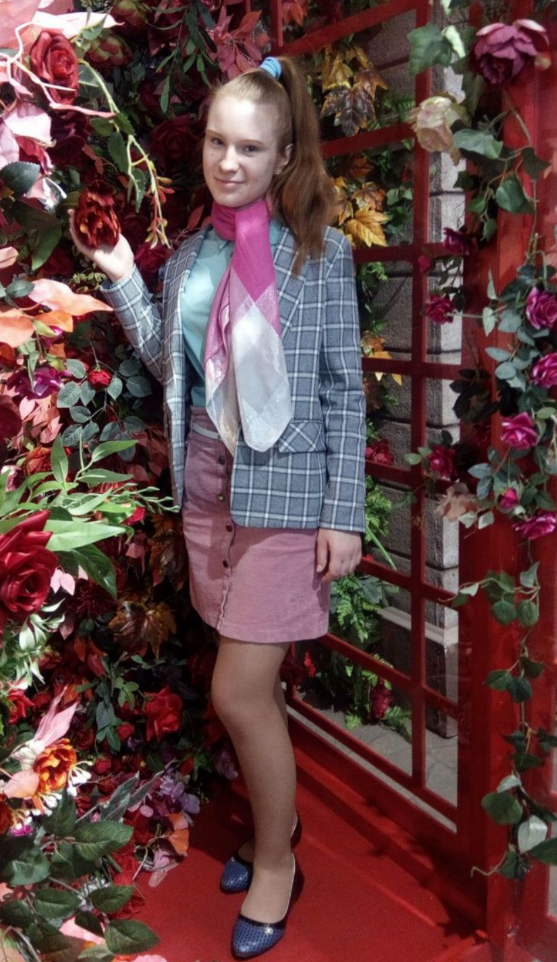

Белорусский государственный университет
Механико-математический факультет
Богдан Вероника: студентка 1 курса
Нестандартное резюме
Art influences:
Музыка, семья, успешные события, чтение книг, природа, общение с приятными людьми
Любимая книга:
«Гарри Поттер и Принц-полукровка»
Дж.К.Роулинг
Любимая цитата:
Цаніце кожнае імгненне, кожны дзень жыцця, бо гэта і ёсць самая галоўная навука — сапраўднае шчасце.
В.А.Моцарт
Образование:
Минский государственный областной лицей
БГУ, Мехмат, специальность: математика и ИТ (направление - математическое и программное обеспечение мобильных устройств), 2020 - 2024
Место рождения:
г. Минск
Кем себя вижу в мире
Web-технологий:
Web-технологий:
Front-end developer